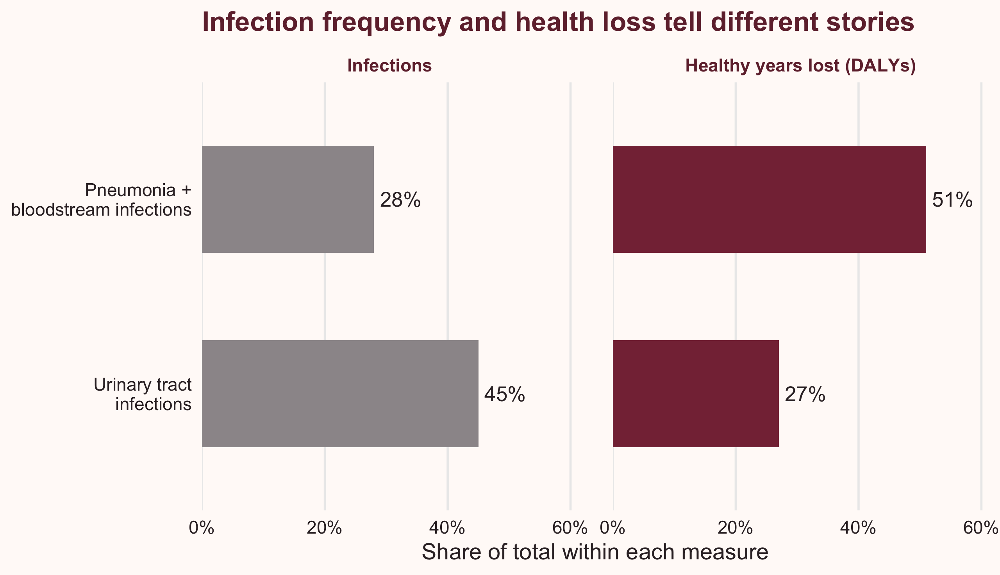
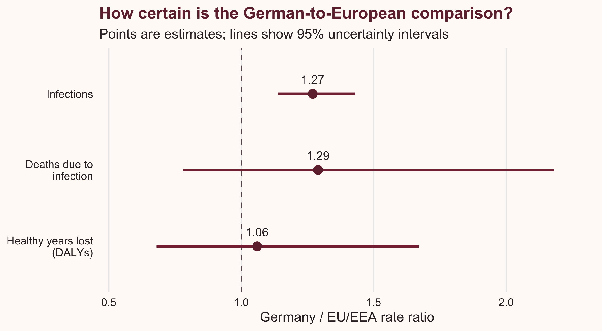

| Measure | Unit | Germany | EU/EEA |
|---|---|---|---|
| Hospital incidence | Infections per 100 hospitalised patients | 2.40 | 2.83 |
| Annual population incidence | Infections per 100,000 residents | 592.1 | 467.9 |
Problem description
A lower hospital infection rate sounds like good news. But does it also mean a lower infection rate across the population? And do more infections always mean more harm? Germany’s 2011 estimates help us explore both questions.
Healthcare-associated infections (HAIs) are infections acquired during healthcare. They can mean extra illness, disability or early death for someone already receiving care.
Zacher et al. (2019) studied five infection types in Germany: pneumonia, primary bloodstream infection, urinary tract infection, surgical-site infection and Clostridioides difficile infection.
This blog looks at how the group used to calculate a rate changes the comparison, and why the most common infection may not cause the greatest harm. The estimates describe 2011, not hospital safety today.
Analysis
Reading hospital and population rates
Table 1 shows the comparison from two angles. Germany had fewer estimated infections per 100 patients in hospital than the European Union/European Economic Area (EU/EEA), but more per 100,000 residents.
The difference is the denominator: the group infections are counted against. To estimate the population rate, the researchers multiplied hospital incidence by annual hospital discharges, then divided by the resident population. A discharge is a completed hospital stay; one person can have several stays.
Germany’s greater amount of hospital care per resident helps explain its higher population infection rate (Zacher et al. 2019, 9). A lower hospital measure therefore does not automatically mean a lower rate across the population. This comparison alone cannot tell us an individual’s risk or how many infections reducing hospital use would prevent.
Infection counts miss some of the harm
Counting cases tells us how often infections occur. It tells us less about what happens to the people affected.
The study measured health loss in disability-adjusted life years (DALYs). These combine healthy years lost through early death and through illness or disability. One DALY is one lost year of full health.
In Figure 1, the left panel shows shares of infections and the right shows shares of DALYs. Each percentage uses the study’s total for all five infection types.

Pneumonia and primary bloodstream infections together made up 28% of infections but 51% of DALYs. Urinary tract infections accounted for 45% of infections and 27% of DALYs (Zacher et al. 2019, 6).
So, infection counts alone can miss serious harm. Only selected groups are shown here; other infection types account for the rest. The percentages are rounded, and the chart does not show uncertainty intervals. They describe a broad pattern, rather than an exact ranking of the true burden.
Choosing a prevention measure would also require evidence about how well it works, which infections it can prevent and what it costs.
How clear is the European comparison?
Table 2 compares Germany’s annual rates per resident with the EU/EEA. A ratio of 1 means equal estimated rates; above 1 means a higher German rate.
| Outcome | Germany / EU/EEA | 95% uncertainty interval |
|---|---|---|
| Infections | 1.27 | 1.14–1.43 |
| Deaths attributable to infection | 1.29 | 0.78–2.18 |
| Healthy years lost (DALYs) | 1.06 | 0.68–1.67 |
In Figure 2, each point is an estimate and each line shows its 95% uncertainty interval. The dashed line at 1 marks equal rates. An interval crossing this line allows both lower and higher German rates.

The infection-rate ratio is 1.27, with its interval entirely above 1. The death and DALY intervals include 1. This supports higher population infection incidence more clearly than higher death or health-loss rates. It does not prove that the latter rates were equal.
Where these estimates came from
The study used the European Centre for Disease Prevention and Control’s hospital point prevalence surveys: snapshots of infections present at the survey date. Germany’s representative 2011 sample included 9,626 patients in 46 hospitals. The European survey covered 273,753 patients in 1,149 hospitals in 2011–2012. Eurostat supplied population and hospital-discharge data (Zacher et al. 2019, 3–4).
The researchers converted these snapshots into annual infection estimates, then used models to estimate deaths and DALYs. A larger German convenience sample helped estimate infection duration and age–sex patterns; this blog uses the representative sample’s headline results throughout.
There are limits to what these estimates can tell us. The five infection types covered about 79% of HAIs in the European survey. Patient groups could differ between hospitals, and some evidence about infection outcomes was limited. Assumptions about underlying illness were also taken from European data and applied to Germany (Zacher et al. 2019, 7, 10). The reported intervals cannot capture every possible bias. Infection episodes do not necessarily represent different people.
Conclusion
Germany’s lower infection measure among hospital patients did not mean a lower rate across its population. The amount of hospital care helps explain the difference. Infection counts also missed part of the harm: some less common infections accounted for a larger share of healthy years lost.
When reading infection news, check the group behind the rate, the health effects being measured and the uncertainty. These historical estimates help us read the numbers more carefully; they do not establish today’s hospital safety or the effect of a particular service change (Zacher et al. 2019).
Reference
Zacher, Benedikt, Sebastian Haller, Niklas Willrich, et al. 2019. “Application of a New Methodology and R Package Reveals a High Burden of Healthcare-Associated Infections (HAI) in Germany Compared to the Average in the European Union/European Economic Area, 2011 to 2012.” Eurosurveillance 24 (46): 1900135. https://doi.org/10.2807/1560-7917.ES.2019.24.46.1900135.
Data and figures
The figures were created in R for this blog using published summary estimates from Zacher et al. (2019). No individual patient data were used.